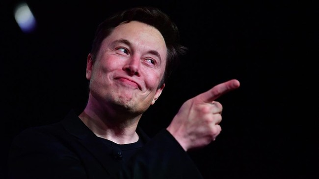
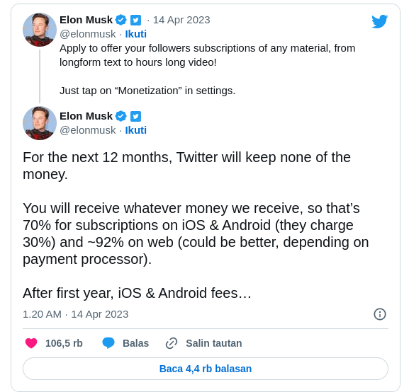

Kamis, 13 Apr 2023 17:00 WIB
Jakarta, CNN Indonesia -- CEO Twitter Elon Musk mengumumkan pergantian fitur 'Super Follows' dengan 'Subscriptions'. Lewat fitur ini, Musk sesumbar para kreator bisa mendapatkan uang lebih banyak. Dikutip dari Engadget, kreator yang ingin menghasilkan uang via Twitter harus mengajukan aplikasi ke pihak Twitter. Selama satu tahun, uang dari para pelanggan yang masuk ke kreator tidak akan dipotong oleh Twitter.
"Untuk 12 bulan ke depan, Twitter tidak akan mendapatkan sepeser pun. Anda akan menerima berapa pun jumlah yang kami terima. Jadi 70 persen untuk langganan di iOS dan Android (mereka mengenakan biaya 30 persen) dan 92 persen di situs bisa lebih baik, tergantung bagaimana pembayaran," tulis Musk dalam pengumuman via akun Twitternya.
"Ajukan aplikasi untuk menawarkan pelanggan Anda material apa pun, dari teks panjang (longform) ke video berdurasi panjang. Cukup klik 'Monetisasi' di Settings," tulis Musk.
Nantinya, konten kreator yang sudah lulus aplikasi bisa menyediakan konten seperti video berdurasi panjang, termasuk konten longform. Mereka juga bisa mengenakan biaya kepada pelanggan mulai dari US$2,99, US$4,99, dan US$9,99 per bulan.

Pelanggan yang sudah membayar pun bisa mendapat konten eksklusif antara
lain kolom obrolan khusus pelanggan di Twiter Spaces. Mereka selanjutnya
akan mendapatkan emblem spesial untuk pelanggan berbayar.
Musk menambahkan, setelah satu tahun, biaya langganan iOS dan Android akan
turun hingga 15 persen. "Kami akan menambahkan jumlah kecil setelah itu,
tergantung dari volumenya," ujar Musk dalam twit yang sama.
Lebih lanjut, Musk mengungkapkan Twitter akan membantu mempromosikan hasil
karya para kreator dengan tujuan "memaksimalkan kesejahteraan para
kreator."
Kreator pun dibebaskan apabila ingin hengkang dari Twitter. "Di titik mana
pun, Anda bisa meninggalkan platform kami dan membawa hasil karya Anda.
Masuk mudah, keluar mudah," tulis Musk.
Melansir
The Verge
, Super Follows sebelumnya diperkenalkan pada Februari 2021. Meski
bersifat menggantikan, Subscriptions disebut memiliki fitur-fitur yang
sama dengan Super Follows. Kreator yang ingin mengajukan aplikasi bisa
mengklik 'Monetization' di 'Settings'. Selanjutnya, muncul kotak
'Subscriptions' yang menjelaskan dengan singkat fitur yang tersedia,
berapa pendapatan satu bulan, dan kelayakan kreator untuk dapat mengajukan
diri.
Beberapa kriteria yang harus dipenuhi antara lain punya paling tidak 500
pengikut, mengunggah 25 twit dalam 30 hari terakhir atau paling tidak
berusia 18 tahun. Twitter kemudian memperketat syaratnya antara lain harus
memiliki paling tidak 10 ribu pengikut aktif.
CNN Indonesia |
||
|---|---|---|
|
Menyajikan berita terhangat langsung melalui handphone Anda |
TELUSURI |
IKUTI KAMI |